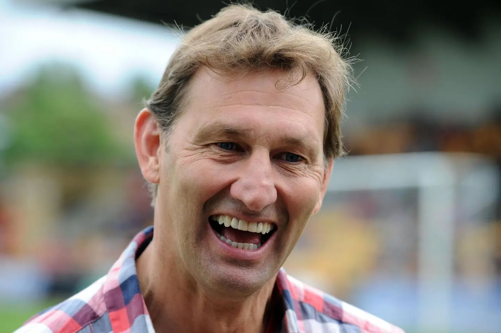
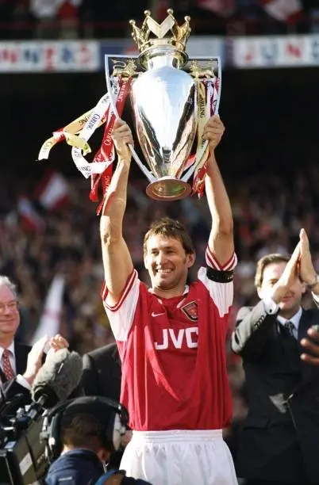

Arsenal · Tony Adams
The Ship That Still
Knew Its Name.
Tony Adams không giữ Arsenal đứng yên. Ông mang cái tên của con tàu từ boong cũ sang boong mới, để nó vẫn nhận ra mình sau mỗi lần đổi thay.
Bên ngoài Emirates có một người đàn ông bằng đồng vẫn đang dang rộng hai tay về phía bầu trời, lồng ngực hướng về sân vận động, đôi chân đứng yên giữa một câu lạc bộ đã thay đổi gần như mọi thứ kể từ ngày ông chơi trận cuối cùng.
Highbury không còn nữa. Những đồng đội từng đứng cạnh ông trong hàng phòng ngự nổi tiếng năm xưa đã già đi, những khán đài cũ chỉ còn tồn tại trong ảnh, trong những đoạn phim đã nhòe màu và trong ký ức của những người đôi khi vẫn vô thức gọi Emirates bằng cái tên của một mái nhà đã mất. Arsenal cũng đã đi qua nhiều huấn luyện viên, nhiều thế hệ, nhiều thứ bóng đá khác nhau, đã có lúc đứng trên đỉnh, có lúc trôi dạt giữa những năm tháng không còn nhận ra chính mình, rồi lại bắt đầu một hành trình khác để tìm đường trở về.
Chỉ có Tony Adams vẫn đứng đó, hai tay mở rộng trong tư thế ăn mừng bàn thắng trước Everton năm 1998, như thể người đội trưởng vẫn đang canh giữ một khoảnh khắc mà câu lạc bộ không bao giờ muốn để thời gian lấy mất. Bức tượng của ông được dựng bên ngoài Emirates trong dịp Arsenal kỷ niệm 125 năm thành lập, và hơn một thập kỷ sau, nó vẫn đứng gần khán đài North Bank như một mảnh Highbury được mang sang mái nhà mới.
Nhưng điều gì khiến một con người được gọi bằng tên của cả một câu lạc bộ? Không chỉ là 669 lần khoác áo Arsenal, dù rất ít người có thể ở lại đủ lâu để những con số thôi không còn là thống kê mà trở thành một đời người. Không chỉ là chiếc băng đội trưởng ông nhận khi mới 21 tuổi rồi giữ suốt 14 năm. Không chỉ là những chức vô địch trải dài qua ba thập niên khác nhau, những chiếc cúp, những buổi chiều tại Highbury hay việc từ trận ra mắt năm 1983 tới trận cuối cùng năm 2002, Tony Adams chưa từng chơi bóng chuyên nghiệp cho bất kỳ câu lạc bộ nào khác. Lòng trung thành có thể giải thích vì sao ông ở lại. Nhưng nó chưa đủ để giải thích vì sao ông trở thành Mr. Arsenal.
Nếu từng tấm ván đều được thay đi, điều gì khiến con tàu vẫn là chính nó?
Có một nghịch lý cổ được gọi là con tàu Theseus. Người ta hình dung một con tàu lênh đênh qua rất nhiều năm, để rồi từng tấm ván mục lần lượt được tháo xuống và thay bằng những tấm ván mới. Cột buồm được thay. Cánh buồm được thay. Mạn tàu, bánh lái, những chiếc đinh giữ thân tàu lại với nhau, tất cả rồi cũng khác đi, cho tới một ngày không còn bất kỳ bộ phận nguyên bản nào tồn tại. Khi đó, người ta bắt đầu hỏi liệu con tàu trước mặt mình có còn là con tàu đã rời bến năm xưa hay không, hay nó chỉ là một vật thể hoàn toàn mới vẫn đang mang theo cái tên cũ.
Arsenal trong suốt sự nghiệp của Tony Adams cũng giống một con tàu như vậy. Khi ông bước lên đội một, Arsenal vẫn còn thuộc về một nước Anh khác, một thứ bóng đá được tạo nên từ bùn đất, những buổi chiều lạnh, những cú tắc bóng không cần lời xin lỗi và niềm tin rằng trước khi nghĩ tới việc trở nên đẹp đẽ, một đội bóng phải học cách không bị đánh bại. Dưới thời George Graham, Arsenal được dựng lên từ sự tổ chức, từ những khoảng cách được giữ gần như tuyệt đối, từ hàng phòng ngự mà Adams đứng giữa cùng Steve Bould, Lee Dixon và Nigel Winterburn, bốn con người di chuyển như thể được nối với nhau bằng một sợi dây vô hình, cùng bước lên, cùng lùi xuống, cùng biến từng mét cỏ trước khung thành thành một phần lãnh thổ không dễ được trao cho bất kỳ ai.

Tony Adams thuộc về thế giới đó một cách tự nhiên tới mức người ta có thể tưởng ông đã được đúc ra từ chính lớp bê tông dưới khán đài Highbury. Ông chơi bóng với dáng vẻ của một người không xem khung thành phía sau chỉ là hai cột dọc cùng một tấm lưới, mà là một cánh cửa được giao cho mình bảo vệ, nơi mọi tiền đạo muốn bước qua trước hết phải chấp nhận đi xuyên qua cơ thể ông. Những cú đánh đầu phá bóng, những lần lao ra chặn cú sút, giọng nói vang lên giữa hàng thủ, cánh tay giơ cao yêu cầu đồng đội bước lên, tất cả khiến Adams trông giống một bức tường biết chỉ huy những viên gạch chung quanh mình.
Đó là một Arsenal của thép, và Adams là phần thép nằm sâu nhất trong nền móng. Nhưng thời gian không bao giờ hỏi một câu lạc bộ liệu nó đã sẵn sàng thay đổi hay chưa. George Graham rời đi. Arsène Wenger bước tới từ một thế giới mà bóng đá Anh khi đó còn nhìn bằng ánh mắt vừa tò mò vừa hoài nghi, mang theo những ý tưởng mới về dinh dưỡng, tập luyện, cách chăm sóc cơ thể và cách một đội bóng có thể chiến thắng mà không cần từ bỏ vẻ đẹp. Những cầu thủ từ nhiều vùng đất khác nhau xuất hiện, nhịp chơi trở nên nhanh hơn, trái bóng được chuyền với một sự tự do khác, còn Arsenal bắt đầu thay từng tấm ván của con tàu cũ trong lúc nó vẫn đang ở giữa biển.
Một trung vệ người Anh đã trưởng thành trong thứ bóng đá của George Graham hoàn toàn có thể trở thành mảnh gỗ cũ bị tháo xuống đầu tiên. Adams đã không để điều đó xảy ra. Không phải bằng cách chống lại sự thay đổi, cũng không phải bằng cách yêu cầu Arsenal mới phải tiếp tục mang hình dạng của Arsenal từng làm nên tên tuổi ông, mà bằng việc chấp nhận học lại cách tồn tại trong chính câu lạc bộ mình đã thuộc về từ khi còn là một cậu học sinh. Đó có lẽ là điều đặc biệt nhất về Tony Adams. Ông không bảo vệ bản sắc Arsenal bằng cách giữ nó đứng yên. Ông bảo vệ nó bằng cách mang phần cốt lõi của quá khứ bước vào tương lai.
Arsenal dưới Wenger có thể nhẹ hơn, nhanh hơn và đẹp hơn, nhưng nó vẫn cần lòng kiêu hãnh, sự kỷ luật và cảm giác rằng màu áo này phải được bảo vệ bằng nhiều hơn kỹ thuật. Adams không còn chỉ là thủ lĩnh của một hàng phòng ngự cũ, ông trở thành chiếc cầu nối giữa hai thời đại, là giọng nói từ căn nhà cũ vang lên trong những căn phòng vừa được xây lại, là người nhắc những tấm ván mới rằng con tàu này từng vượt qua những cơn bão nào trước khi họ bước lên.
Nhưng trong khi Adams giữ Arsenal đứng vững trước mặt hàng chục ngàn người, có một phần khác trong đời ông đang âm thầm đổ xuống sau những cánh cửa không có khán đài. Người đàn ông có thể nhận ra một tiền đạo đang di chuyển chỉ bằng một cái liếc mắt, có thể nhìn thấy mối nguy hiểm trước khi nó thành hình và tổ chức cả hàng phòng ngự để ngăn đối phương bước qua, lại không thể bảo vệ chính mình khỏi chứng nghiện rượu đã dần chiếm lấy những khoảng tối ngoài sân cỏ. Đằng sau hình ảnh người đội trưởng bất khả xâm phạm, sau những danh hiệu và tiếng hô vang từ North Bank, Adams đang sống trong một cuộc chiến mà sức mạnh thể chất, lòng dũng cảm và chiếc băng trên cánh tay đều không thể giúp ông tự mình thoát ra.
Đó là nghịch lý đau đớn nhất của một người được nhớ như bức tường. Ông có thể che chắn cho tất cả những người đứng phía sau, nhưng không biết phải làm gì khi những vết nứt bắt đầu xuất hiện từ bên trong. Năm 1996, Adams tìm kiếm sự hỗ trợ để đối diện với chứng nghiện rượu. Sau này, ông kể lại hành trình đó trong tự truyện và dùng chính trải nghiệm hồi phục của mình để thành lập Sporting Chance vào năm 2000, một tổ chức hỗ trợ những người làm việc trong thể thao đối diện với nghiện ngập và các vấn đề sức khỏe tinh thần.

Có lẽ khoảnh khắc can đảm nhất trong đời Tony Adams không xảy ra khi ông đặt đầu mình vào nơi một tiền đạo đang vung chân, không xảy ra trong một cuộc đối đầu tại Anfield, cũng không nằm trong bất kỳ lần nào ông bước lên nâng cúp. Nó xảy ra khi người đội trưởng thừa nhận rằng có một trận đấu mình không thể tiếp tục chơi một mình. Bóng đá đã dành quá nhiều năm để dạy những người đàn ông rằng mạnh mẽ có nghĩa là không được phép vỡ, rằng thủ lĩnh phải là người không bao giờ cúi xuống, không bao giờ sợ hãi, không bao giờ cần một cánh tay khác kéo mình đứng dậy. Adams phải học một định nghĩa khác, khó hơn và cũng chân thật hơn, rằng đôi khi sức mạnh không nằm trong việc tiếp tục dựng bức tường lên cao để không ai nhìn thấy những gì đang xảy ra phía sau, mà nằm trong việc tự tay mở một cánh cửa và cho người khác bước vào.
Ông không hồi phục bằng một khoảnh khắc duy nhất, bởi nghiện ngập không phải một tiền đạo có thể bị tắc bóng rồi biến mất khỏi trận đấu. Đó là một hành trình phải được lựa chọn lại mỗi ngày, trong những buổi sáng không có tiếng vỗ tay, trong những quyết định rất nhỏ không bao giờ xuất hiện trên bảng tỷ số, trong việc học cách sống với bản thân mà không cần trốn khỏi chính mình.
Và khi Adams bắt đầu xây lại con người phía sau chiếc áo, Arsenal chung quanh ông cũng đang được dựng lại theo một hình hài khác. Có lẽ vì vậy mà bàn thắng trước Everton vào ngày 3 tháng 5 năm 1998 mang một ý nghĩa lớn hơn rất nhiều so với việc nó chỉ là bàn cuối cùng trong chiến thắng 4-0 giúp Arsenal chính thức giành chức vô địch. Khi trận đấu sắp khép lại, Steve Bould ngẩng đầu rồi đưa một đường chuyền vượt qua hàng phòng ngự Everton. Adams, người đã dành gần như cả sự nghiệp lùi về phía khung thành của mình, bất ngờ băng lên như một tiền đạo, đỡ bóng bằng ngực trước khi tung cú sút chân trái vào lưới. Đó là bàn thắng đóng dấu cho chức vô địch đầu tiên của Arsenal dưới thời Wenger, và cũng là hình ảnh sau này được dùng làm cảm hứng cho bức tượng đang đứng ngoài Emirates.
Không một người viết kịch bản nào có thể sắp đặt khoảnh khắc đó đẹp hơn. Steve Bould, người đã đứng cạnh Adams trong bức tường của Arsenal cũ, thực hiện đường chuyền. Tony Adams, biểu tượng lớn nhất của nền móng đó, chạy về phía trước để kết thúc nó. Một trung vệ được tạo nên bởi sự khắc khổ của George Graham ghi bàn xác nhận kỷ nguyên mới của Arsène Wenger. Quá khứ không bị vứt lại phía sau, nó ngẩng đầu lên, nhìn thấy tương lai rồi tự tay chuyền bóng vào đó.
Bould đưa bóng đi.
Adams lao lên.
Con tàu cũ căng lại cánh buồm giữa một luồng gió mới.
Trong vài giây, tất cả những phiên bản khác nhau của Arsenal cùng tồn tại trong một pha bóng, hàng phòng ngự từng làm nên bản sắc của câu lạc bộ, thứ bóng đá mới đang mở ra dưới thời Wenger, người đội trưởng đã đi qua sự đổ vỡ và bắt đầu xây lại đời mình, rồi cuối cùng là hai cánh tay dang rộng giữa Highbury, như thể Adams không chỉ đang ăn mừng một bàn thắng mà đang ôm lấy toàn bộ những gì Arsenal từng là và sắp trở thành.
Có lẽ câu bình luận nổi tiếng ngày hôm đó đã đúng theo một cách mà ngay cả người nói cũng không thể lường hết. Khoảnh khắc đó thật sự đã tóm gọn tất cả. Nhưng Adams vẫn chưa dừng lại ở đó. Ông tiếp tục dẫn dắt Arsenal, tiếp tục thích nghi với một đội bóng ngày càng khác so với nơi mình từng bắt đầu, rồi cùng câu lạc bộ giành thêm cú đúp quốc nội năm 2002 trước khi khép lại sự nghiệp. Người đội trưởng được tạo ra trong một thập niên khác đã sống đủ lâu trong bóng đá để nâng cúp cùng hai Arsenal tưởng như không thể thuộc về cùng một câu chuyện. Có những cầu thủ tồn tại qua nhiều thời đại nhờ tài năng của họ luôn phù hợp. Adams tồn tại bởi ông chấp nhận để thời đại thay đổi mình mà không cho phép nó xóa đi con người mình.

Ông vẫn là người đội trưởng đó, vẫn bảo vệ câu lạc bộ bằng sự nghiêm khắc và lòng tự trọng gần như không thể thương lượng, nhưng ông không biến truyền thống thành một chiếc neo kéo Arsenal mắc kẹt dưới đáy quá khứ. Ông hiểu, có lẽ trước cả khi người ta có thể diễn đạt thành lời, rằng bản sắc không phải hình dạng bất biến được đặt trong tủ kính, mà là một điều sống, phải biết thở, biết thích nghi và đôi khi phải thay đổi cách tồn tại để có thể tiếp tục được mang về phía trước.
Đó cũng là câu trả lời cho nghịch lý con tàu Theseus. Sau khi từng tấm ván đã được thay, liệu nó có còn là con tàu cũ? Có lẽ một con tàu không chỉ được xác định bởi những mảnh gỗ làm nên thân mình. Nó còn tồn tại trong những chuyến đi đã trải qua, những cơn bão từng sống sót, những cái tên được khắc vào mạn tàu, trong ký ức của những người đã bước lên nó và trong khả năng tự nhận ra mình mỗi khi nhìn xuống mặt nước.
Tony Adams không phải một tấm ván cũ được Arsenal giữ lại chỉ để chứng minh rằng câu lạc bộ chưa quên quá khứ.
Ông là ký ức biết bước đi.
Là phần lịch sử có thể trò chuyện với tương lai.
Là người mang tên của con tàu từ boong cũ sang boong mới, rồi trao lại nó cho thế hệ phía sau mà không yêu cầu họ phải đi theo đúng hải trình của mình.
Và cũng như Arsenal, Adams không đi qua thời gian trong cùng một hình dạng. Ông từng là cậu học sinh bước vào học viện, là trung vệ trẻ mắc sai lầm trong trận ra mắt, là đội trưởng 21 tuổi phải học cách dẫn dắt những người lớn tuổi hơn, là biểu tượng của một hàng phòng ngự thép, là con người đang đổ vỡ phía sau vẻ ngoài không thể xuyên qua, là người chấp nhận cầu cứu, là thủ lĩnh của cuộc cách mạng dưới thời Wenger, rồi là người dùng những năm tháng khó khăn nhất của đời mình để tạo ra một nơi giúp những người khác không phải chiến đấu một mình.
Nếu Mr. Arsenal chỉ có nghĩa là người ở lại lâu nhất, danh xưng đó sẽ quá nhỏ đối với Tony Adams. Ông là Arsenal không phải vì chưa bao giờ thay đổi, mà bởi hành trình của ông mang cùng một bản chất với câu lạc bộ, kiêu hãnh nhưng không miễn nhiễm trước sai lầm, mạnh mẽ nhưng từng nhiều lần đứng gần bờ vực, được tạo nên bởi truyền thống nhưng chỉ có thể tiếp tục tồn tại khi đủ can đảm bước sang một hình dạng mới. Bên ngoài Emirates, bức tượng vẫn giữ Adams trong một khoảnh khắc vĩnh viễn. Hai tay ông dang rộng. Gương mặt hướng lên. Đôi chân được đúc chặt vào nền đá, không còn phải chạy về khung thành, cũng không còn phải băng qua những khoảng tối mà rất lâu sau người ngoài mới hiểu ông đã từng chịu đựng.

Khách du lịch đi ngang qua có thể dừng lại chụp một tấm hình. Những đứa trẻ sinh ra nhiều năm sau trận đấu cuối cùng của Adams có thể chỉ biết ông qua lời kể, qua những đoạn phim cũ và qua danh xưng được lặp lại tới mức nghe giống một cái tên thật. Phía sau bức tượng, Emirates vẫn sáng đèn, vẫn đón những thế hệ mới bước vào, vẫn tiếp tục thay những tấm ván của mình khi bóng đá đổi thay.
Nhưng ở đâu đó sâu trong thân tàu, giữa tiếng động của máy móc mới, những cánh buồm mới và những con người đang đưa nó về phía một chân trời khác, vẫn có một cái tên được giữ lại từ rất lâu. Không phải như một lời yêu cầu Arsenal phải quay trở về quá khứ. Mà như một lời nhắc rằng dù con tàu có được xây lại bao nhiêu lần, dù nó đi xa tới đâu và trở thành một điều khác biệt tới mức nào, nó vẫn phải biết mình là ai mỗi khi nhìn xuống mặt nước.